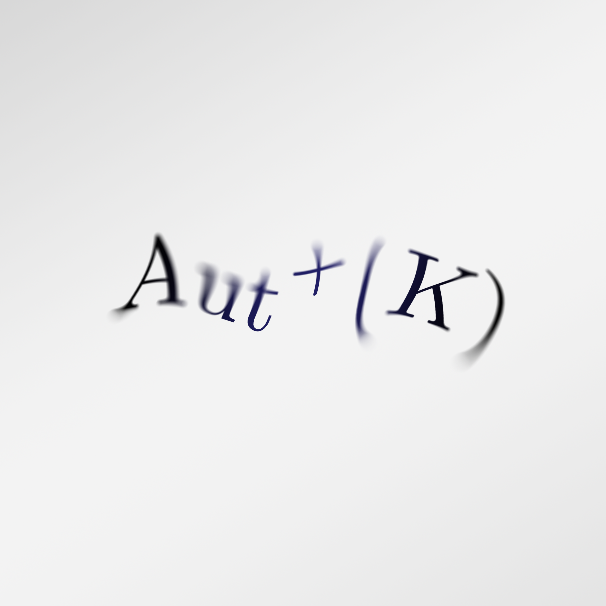
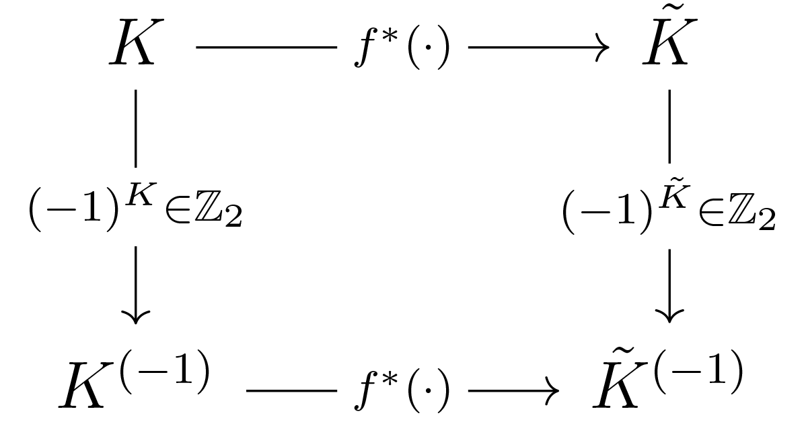

Orientation-Preserving Automorphism Group G-Map and Invariant Map: Simplicial Complexes and Cell Complexes

The orientation-preserving automorphism group of a simplicial complex is denoted by \( \text{Aut}^+(K) \), where \( + \) indicates that it consists of the automorphisms that preserve the orientation of the complex \( K \). The orientation of a simplex can be thought of as an ordering of its vertices, and this ordering can have implications on various mathematical operations, such as the computation of homology groups.
When a simplex \( \sigma \) changes its orientation, it changes its relative orientation with respect to all of its neighboring simplices. This means that if the original orientation had a relative orientation of \( +1 \), then the new orientation will have a relative orientation of \( -1 \), and vice versa. Additionally, the change in orientation of \( \sigma \) results in a flip of the sign of its own features. This corresponds to modifications in the signature of the entries of the boundary matrices, as well as the rows of the feature matrices. We can express the multiplication of the boundary matrix and the feature matrix by \( -1 \) as a linear transformation.
A function \( f: K \rightarrow \tilde{K} \) is said to be orientation group equivariant if:
\begin{equation} \label{orient-cov}
f\left( (-1)^\sigma \ \sigma\right)=(-1)^{\tilde{\sigma}} \ f(\sigma) \quad \forall \sigma \in K
\end{equation}
where \( (-1)^\sigma \in \mathbb{Z}_2 \) is the change of orientation of a simplex \( \sigma \), \( \mathbb{Z}_2 \) is the group of integers modulo 2, and \( f \) is any function of interest (e.g. convolution). The group operation in this case is addition modulo 2. If \( \sigma \) is an odd-dimensional simplex, then \( (-1)^\sigma \) is equal to \( -1 \), and if \( \sigma \) is an even-dimensional simplex, then \( (-1)^\sigma \) is equal to \( +1 \).
It is important to note here that \( f(x) \) is and odd function. A function \( f(x) \) defined on a domain that is symmetric about zero is called an odd function if \( f(-x) = -f(x) \) for all \( x \) in the domain. Reflecting the function about the origin results in the same function, subject to a change in sign. Geometrically, the graph of an odd function is symmetric about the origin.
The equation \( \ref{orient-cov} \) essentially states that the function \( f \) is orientation group equivariant. To prove this, we need to show that the function behaves consistently with the change of orientation of the simplices.
The term \( (-1)^\sigma \) represents the change in orientation of a simplex \( \sigma \). If \( \sigma \) is odd-dimensional, \( (-1)^\sigma = -1 \), and if \( \sigma \) is even-dimensional, \( (-1)^\sigma = 1 \).
Given the function \( f \) and its property as an odd function, we consider the left-hand side.
If \( \sigma \) is odd-dimensional, the input to \( f \) becomes \( -\sigma \). Using the property of the odd function:
\[ f(-\sigma) = -f(\sigma) . \]
If \( \sigma \) is even-dimensional, the input to \( f \) remains \( \sigma \). Thus:
\[ f(\sigma) = f(\sigma) . \]
Now, we consider the right-hand side.
If \( \sigma \) is odd-dimensional, \( {(-1)^{\tilde{\sigma}} = -1} \). Thus:
\[ (-1)^{\tilde{\sigma}} \ f(\sigma) = -f(\sigma) .\]
If \( \sigma \) is even-dimensional, \( (-1)^{\tilde{\sigma}} = 1 \). Thus:
\[ (-1)^{\tilde{\sigma}} \ f(\sigma) = f(\sigma) .\]
From the above, we can see that for both odd and even-dimensional simplices, the left-hand side and right-hand side are equal.
Convolution on simplicial complexes can be thought of as a local aggregation operation. For each simplex, we aggregate information from its neighboring simplices. In the case of graphs (1-complexes), this is similar to aggregating information from neighboring nodes.
Let us consider the convolution operation \( f \) to be the average of the features of a simplex and its boundary simplices.
For simplices \( \sigma, \tau, \delta \in K \), boundary incidence \( \sigma \prec \tau \) implies \( \sigma \subset \tau \) with no intermediate \( \delta \). Boundary adjacency, given by \( \mathcal{B}(\sigma) = \{ \tau \mid \tau \prec \sigma \} \), denotes simplices \( \tau \) as proper faces of \( \sigma \), reflecting relationships within the boundary of higher-dimensional simplices.
With this background, the convolution operation on simplicial complexes can be defined as:
\[
f^{\ast}(K) =
\frac{\mathbf{x}_{\sigma} + \sum_{\tau \in \mathcal{B}(\sigma)} \mathbf{x}_{\tau}}{|\mathcal{B}(\sigma)| + 1}
\]
where \( \mathbf{x}_{\sigma} \) are the features of the simplex \( \sigma \),
\( \mathcal{B}(\sigma) \) is the set of simplices that are on the boundary of \( \sigma \), and \( \mathbf{x}_{\tau} \) are the features of the simplex \( \tau \).
We say that \( f^{\ast} \) is orientation group equivariant over simplicial complexes if the following commutative diagram holds:

Here, we apply the convolution operation
\( f^{\ast} \) to the simplicial complex \( K \). This will give us a new set of features for each simplex in \( \tilde{K} \).
Next, we change the orientation of the simplices in \( \tilde{K} \). This not only results in a change of sign for the features of the simplices whose orientation has changed but also modifies the boundary matrices. This gives us \( K^{(-1)} \) and its associated boundary matrices.
The outcome of applying the two operations in that order is the same as if we changed the orientation of the simplices (features and boundary matrices) in \( K \), obtaining \( K^{(-1)} \), and, subsequently, performed the convolution.
Consider a simplicial \( k \)-complex \( K \) and its features \( \mathbf{X} = (\mathbf{X}_0, \mathbf{X}_1, \dots, \mathbf{X}_k) \).
To systematically handle changes in orientation, we introduce a sequence of diagonal matrices, denoted by \( \mathbf{O} = (\mathbf{O}_0, \mathbf{O}_1, \dots , \mathbf{O}_k) \). This sequence is finite and ordered, with each matrix corresponding to a specific dimension of the simplices in the complex. The entries of these matrices are determined by the following criteria:
\[
\mathbf{O}_{i(j,j)} =
\begin{cases}
-1 & \text{ if } i>0 \land (j,j) \text{ changes orientation } \\
+1 & \text{ if } i=0 \ (\mathbf{O}_0=\mathbf{I}) \lor (i>0 \land (j,j)) \text{ otherwise }
\end{cases}
\]
Here, the matrix \( \mathbf{O}_0 \) is the identity matrix \( \mathbf{I} \), representing the fact that 0-dimensional simplices (vertices) do not have a changeable orientation. For higher dimensions, the orientation is captured by the sign of the matrix entries.
It is unusual to speak about features having orientation. In data structures like graphs or simplicial complexes, there might be a notion of orientation for the data structure itself, but not commonly for the features. However, if we think of features as functions defined on a simplicial complex, then these functions might have values that change based on the orientation of the underlying simplices. For instance, consider a function that measures some form of flow or directionality on a complex. The orientation of the simplices might affect the function's values, and thus, the features derived from this function would be orientation-dependent.
When we talk about the change of orientation of feature matrices \( \mathbf{X} \), their orientation can be modified using our sequence of diagonal matrices. The transformation is applied element-wise, resulting in a new sequence of feature matrices:
\[
\mathbf{OX} = ( \mathbf{O}_0 \mathbf{X}_0, \mathbf{O}_1 \mathbf{X}_1, \dots , \mathbf{O}_{k} \mathbf{X}_k )
\]
Similarly, the boundary matrices \( \mathbf{B} \) undergo a change in orientation. This change is slightly more intricate, as it involves a combination of different matrices from our sequence:
\[
\mathbf{OB} = ( \mathbf{O}_0 \mathbf{B}_1 \mathbf{O}_1, \mathbf{O}_1 \mathbf{B}_2 \mathbf{O_2}, \dots , \mathbf{O}_{k-1} \mathbf{B}_k \mathbf{O}_k )
\]
With these transformations in place, we can define certain properties of functions with respect to orientation. A function \( f \) is termed orientation invariant if its output remains unchanged despite alterations in the orientation of its input matrices:
\[
f(\mathbf{OB},\mathbf{O} \mathbf{X}) = f(\mathbf{B},\mathbf{X})
\]
On the other hand, a function is deemed orientation group equivariant if the change in orientation of its input matrices results in a corresponding transformation in its output:
\[
f(\mathbf{OB},\mathbf{O} \mathbf{X}) = \mathbf{O} f(\mathbf{B},\mathbf{X})
\]
These definitions are essential as they provide a framework for understanding how different mathematical operations respond to changes in orientation, a fundamental aspect when working with simplicial complexes.
Consider a simple 2-complex \( K \) that consists of vertices (0-simplices), edges (1-simplices), and triangles (2-simplices). For our example, let us assume our complex has 3 vertices, 3 edges, and 1 triangle.
For each simplex, we associate a feature vector. Let us denote the feature vectors for vertices, edges, and triangles as \( \mathbf{x}_{0,j} \), \( \mathbf{x}_{1,j} \), and \( \mathbf{x}_{2,j} \) respectively, where \( j \) is the index of the simplex in its dimension.
Given the features of this complex: \\
\(
{\mathbf{X}_0 =
\left(
\mathbf{x}_{0,1}^T,
\mathbf{x}_{0,2}^T,
\mathbf{x}_{0,3}^T
\right)^T}
\),
\(
{\mathbf{X}_1 =
\left(
\mathbf{x}_{1,1}^T,
\mathbf{x}_{1,2}^T,
\mathbf{x}_{1,3}^T
\right)^T}
\), and
\(
{\mathbf{X}_2 =
\left(
\mathbf{x}_{2,1}^T
\right)^T}
\),
where each row in \( \mathbf{X}_k \) is a feature vector. For simplicity, let us assume these vectors are 2-dimensional.
Now, let us say that the orientation of the second edge and the triangle changes.
Consider the orientation matrices \( \mathbf{O}_k \) as defined previously. If the orientation of the second edge and the triangle changes, the matrices would be:
\[
\mathbf{O}_0 = \mathbf{I},
\quad
\mathbf{O}_1 =
\left(\begin{smallmatrix}
1 & 0 & 0 \\
0 & -1 & 0 \\
0 & 0 & 1 \\
\end{smallmatrix}\right),
\quad
\mathbf{O}_2 =
\left(\begin{smallmatrix}
-1 \\
\end{smallmatrix}\right)
\]
Applying the orientation change to the feature vectors, we obtain:
\begin{align*}
\mathbf{O}_0 \mathbf{X}_0 &= \mathbf{I} \mathbf{X}_0 =
\left(\begin{smallmatrix}
\mathbf{x}_{0,1}^1 & \mathbf{x}_{0,1}^2 \\
\mathbf{x}_{0,2}^1 & \mathbf{x}_{0,2}^2 \\
\mathbf{x}_{0,3}^1 & \mathbf{x}_{0,3}^2
\end{smallmatrix}\right), \\
\mathbf{O}_1 \mathbf{X}_1 &=
\left(\begin{smallmatrix}
1 & 0 & 0 \\
0 & -1 & 0 \\
0 & 0 & 1
\end{smallmatrix}\right)
\left(\begin{smallmatrix}
\mathbf{x}_{1,1}^1 & \mathbf{x}_{1,1}^2 \\
\mathbf{x}_{1,2}^1 & \mathbf{x}_{1,2}^2 \\
\mathbf{x}_{1,3}^1 & \mathbf{x}_{1,3}^2
\end{smallmatrix}\right) \\
&= \left(\begin{smallmatrix}
\mathbf{x}_{1,1}^1 & \mathbf{x}_{1,1}^2 \\
-\mathbf{x}_{1,2}^1 & -\mathbf{x}_{1,2}^2 \\
\mathbf{x}_{1,3}^1 & \mathbf{x}_{1,3}^2
\end{smallmatrix}\right), \\
\mathbf{O}_2 \mathbf{X}_2 &=
\left(\begin{smallmatrix}
-1
\end{smallmatrix}\right)
\left(\begin{smallmatrix}
\mathbf{x}_{2,1}^1 & \mathbf{x}_{2,1}^2
\end{smallmatrix}\right) \\
&= \left(\begin{smallmatrix}
-\mathbf{x}_{2,1}^1 & -\mathbf{x}_{2,1}^2
\end{smallmatrix}\right) .
\end{align*}
Notice how the feature of the second edge and the triangle has changed sign due to the change in orientation.
Given the 2-complex \( K \), we can define the boundary matrices.
Boundary adjacency message passing on a cell 2-complex.
.
\begin{center}
\begin{tikzpicture}
\node[circle, draw, fill=black, inner sep=2pt, label=left:$a$] (a) at (0,0) {};
\node[circle, draw, fill=black, inner sep=2pt, label=right:$b$] (b) at (2,0) {};
\node[circle, draw, fill=black, inner sep=2pt, label=above:$c$] (c) at (1,1.6) {};
\node at (1,0.6) {$t_1\circlearrowright$};
\path[fill=black,opacity=0.05] (a.center) -- (b.center) -- (c.center) -- cycle;
\draw[->] (b) -- node[below] {$e_1$} (a);
\draw[->] (b) -- node[right] {$e_3$} (c);
\draw[->] (c) -- node[left] {$e_2$} (a);
\end{tikzpicture}
\end{center}
\( \mathbf{B}_1 \) represents the relationship between edges and vertices. Each column corresponds to an edge, and each row corresponds to a vertex. The entries in the matrix indicate which vertices are endpoints of each edge. Let us assume:
\[
\mathbf{B}_1 =
\left(\begin{smallmatrix}
1 & 1 & 0 \\
-1 & 0 & -1 \\
0 & -1 & 1 \\
\end{smallmatrix}\right)
\]
Here, the first edge connects the first and second vertices, the second edge connects the first and third vertices, and the third edge connects the second and third vertices.
\( \mathbf{B}_2 \) represents the relationship between triangles and edges. Each column corresponds to a triangle, and each row corresponds to an edge. The entries in the matrix indicate which edges form the boundary of each triangle. Let us assume:
\[
\mathbf{B}_2 =
\left(\begin{smallmatrix}
1 \\
-1 \\
-1 \\
\end{smallmatrix}\right)
\]
Given the orientation matrices \( \mathbf{O}_k \) from the previous example, the change in orientation for the boundary matrices can be computed as:
\[
\mathbf{O}_0 \mathbf{B}_1 \mathbf{O}_1 =
\mathbf{I}
\left(\begin{smallmatrix}
1 & 1 & 0 \\
-1 & 0 & -1 \\
0 & -1 & 1 \\
\end{smallmatrix}\right)
\left(\begin{smallmatrix}
1 & 0 & 0 \\
0 & -1 & 0 \\
0 & 0 & 1 \\
\end{smallmatrix}\right) =
\left(\begin{smallmatrix}
1 & -1 & 0 \\
-1 & 0 & -1 \\
0 & 1 & 1 \\
\end{smallmatrix}\right)
\]
This represents the change in orientation for the boundary matrix between vertices and edges.
\[
\mathbf{O}_1 \mathbf{B}_2 \mathbf{O}_2
= \left(\begin{smallmatrix}
1 & 0 & 0 \\
0 & -1 & 0 \\
0 & 0 & 1 \\
\end{smallmatrix}\right)
\left(\begin{smallmatrix}
1 \\
-1 \\
-1 \\
\end{smallmatrix}\right)
(-1) =
\left(\begin{smallmatrix}
-1 \\
-1 \\
1 \\
\end{smallmatrix}\right)
\]
This represents the change in orientation for the boundary matrix between edges and triangles.